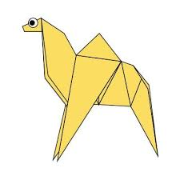
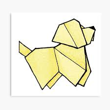

Origami Camel
Facts About Camels
- Camels have three sets of eyelids and two rows of eyelashes to keep sand out of their eyes.
- Camels have thick lips which let them forage for thorny plants other animals can't eat.
- Camels can completely shut their nostrils during sandstorms.
- There are two types of camels: One humped or “dromedary” camels and two humped Bactrian camels.
- Camels can travel at up to 40 miles per hour – the same as a racehorse!

Origami Dog
Facts About Dogs
- Dogs noses are wet to help absorb scent chemicals.
- A dog's nose print is unique, much like a person's fingerprint.
- The Labrador Retriever has been on the AKC's top 10 most popular breeds list for 25 consecutive years—longer than any other breed.
- The shape of a dog’s face suggests its longevity: A long face means a longer life.
- Human blood pressure goes down when petting a dog. And so does the dog’s.

Facts About Frogs
- Frogs drink water through their skin.
- A frog's eyes and nose are on the very top of their heads.
- Frogs can lay as many as 4,000 eggs in frogspawn.
- The eyes and nose of a frog are on top of its head so it can breathe and see when most of its body is under the water.
- Frogs have long back legs and webbed feet for jumping and swimming.